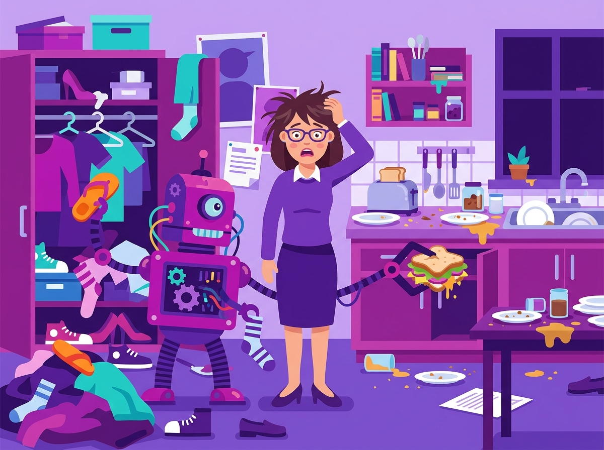

自動化任務的 5 大判準
不是什麼事情都該丟給 AI！教你精準評估教育現場的「自動化投資報酬率」。
導論：何時該用 AI？
當老師們學會了設定 AI Agent 與撰寫提示詞後，很容易產生一種錯覺：「太棒了！以後什麼事情我都要交給 AI 去做！」
然而，開發與測試一個 AI 工作流程是需要時間成本的。如果你花了一整個下午建立一個 AI Agent，結果這個 Agent 解決的任務是你一年只會遇到一次、只需要花五分鐘就能手動做完的事情，那麼這就是一筆不划算的投資。
自動化的終極目標不是「炫技」，而是解決高度重複、枯燥乏味的行政或批改負擔，把省下來的時間還給「教學設計」與「陪伴學生」。
5 大判準詳細解析
在決定是否要把一項任務自動化之前，請務必用以下五個問題來檢驗：
1. 流程固定 (Fixed SOP)
這項任務是否有明確的「標準作業程序」？如果每次處理的步驟都不一樣、需要見機行事，就不適合自動化。
範例：將學生的請假紀錄，從信件中抓出名字、日期，並登記到同一份 Excel 報表中，這就是流程固定。
2. 輸入明確 (Clear Input)
輸入給 AI 的資料，格式是否夠統一？
範例：如果是學校統一格式的請假單單據，AI 很好辨識；但如果是家長用各種不同的口吻在 LINE 群組隨意留言請假，這種「非結構化且極度發散」的輸入，就很容易出錯。
3. 成品明確 (Clear Output)
最後你需要的結果是什麼？這個結果的格式有標準嗎？
範例：要求 AI 產出一份 CSV 檔，或是將文字整理成固定格式的表格。
4. 重複發生 (Highly Repetitive)
這是最關鍵的判準，攸關「投資報酬率」。這個任務是否每天、每週都在發生？
範例：每天要批改的聯絡簿、每週要彙整的成績單。頻率越高，自動化的價值越大。
5. 可由人類審核 (Human Verifiable)
在教育現場，AI 絕對不能完全取代老師的判斷。AI 產出的結果，必須能讓老師在 3 秒鐘內快速判斷對錯。
範例：AI 辨識紙本考卷並打好分數草稿，老師只要核對一下原本的紙本就能確定分數是否正確。絕對不應該讓 AI 自動把成績直接送出給家長，而跳過老師的審核。
正反情境案例對比

案例 A：決定明天的穿搭與午餐
有些老師剛學會用 AI，會試著寫一個 Agent 來「自動安排明天上課的衣服跟要訂什麼午餐」。
- 沒有 SOP： 穿什麼衣服往往看天氣、看心情，甚至看明天有沒有公開授課。
- 無法審核對錯： AI 挑了藍色襯衫，但你今天就不想穿藍色。沒有客觀的對錯標準，只會讓你覺得 AI 很難用。
案例 B：自動登記每日紙本請假單
導師每天早上都會收到幾張紙本的請假單或健康調查表，需要手動登打進教務處的系統。
- 高度重複且 SOP 化： 每天都會發生，步驟永遠是看單子、找名字、找原因、打字輸入。
- 容易審核： 老師請 AI Agent 辨識紙本照片後，只要對照一下螢幕跟手上的單子，一秒鐘就能確認有沒有錯字。這是一個完美的自動化案例！
投資報酬率 (ROI) 觀念
經濟學常提到投資報酬率 (Return on Investment)，這個觀念在推動 AI 教育應用時非常重要。
ROI = (未來節省下的總時間) - (現在開發與維護 AI 所花的時間)
對於資訊能力較弱的老師來說，學習寫 Agent 或設定自動化工具（如 Zapier, Make）可能需要花費 10 個小時。如果這項任務未來一年只能幫老師省下 1 小時，那老師的學習動機絕對是零。
因此，在校園推廣 AI 時，我們必須先幫老師找出那些**「每天吃掉你 30 分鐘，一年吃掉你上百小時」**的痛點，從這些地方下手自動化，老師才能真切感受到 AI 帶來的好處。
國際文獻與資源
- Harvard Business Review (HBR): What Jobs Should You Automate? - 探討企業與組織在面對自動化浪潮時，應該如何評估任務特性。
- McKinsey Global Institute: Where machines could replace humans - 麥肯錫顧問公司的經典報告，分析了哪些工作流程（如資料收集與處理）最容易被機器取代。
- 《AI 時代的教育實務工作指引》 - 台灣相關教育白皮書，強調 AI 在減輕行政負擔的同時，應保持教師在「最終決策 (Human-in-the-loop)」的關鍵角色。